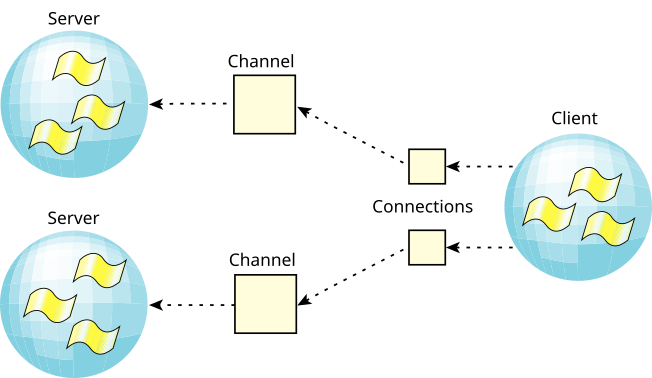

In the QNX OS, message passing is directed towards channels
and connections, rather than targeted directly from thread
to thread. A thread that wishes to receive messages first
creates a channel; another thread that wishes to send a
message to that thread must first make a connection by
attaching
to that channel.
Channels are required by the message kernel calls and are used by servers to
MsgReceive() messages on.
Connections are created by client threads to connect
to the channels made available by
servers. Once connections are established, clients can
MsgSend()
messages over them. If a number
of threads in a process all attach to the same channel, then
the connections all map to the same kernel object for efficiency.
Channels and connections are named within a process by a
small integer identifier. Client connections map directly
into file descriptors (FDs).
Architecturally, this is a key point. By having client
connections map directly into FDs, we have eliminated yet
another layer of translation. We don't need to figure
out
where to send a message based on the file
descriptor (e.g., via a read(fd) call).
Instead, we can simply send a message directly to the file
descriptor
(i.e., connection ID).
| Function | Description |
|---|---|
| ChannelCreate() | Create a channel to receive messages on. |
| ChannelDestroy() | Destroy a channel. |
| ConnectAttach() | Create a connection to send messages on. |
| ConnectDetach() | Detach a connection. |

chid = ChannelCreate(flags);
SETIOV(&iov, &msg, sizeof(msg));
for(;;) {
rcv_id = MsgReceivev( chid, &iov, parts, &info );
switch( msg.type ) {
/* Perform message processing here */
}
MsgReplyv( rcv_id, &iov, rparts );
}
This loop allows the server thread to receive messages from any thread that had a connection to the channel.
While in any of these lists, the waiting thread is blocked (i.e., RECEIVE-, SEND-, or REPLY-blocked). Multiple threads and multiple clients may wait on one channel.